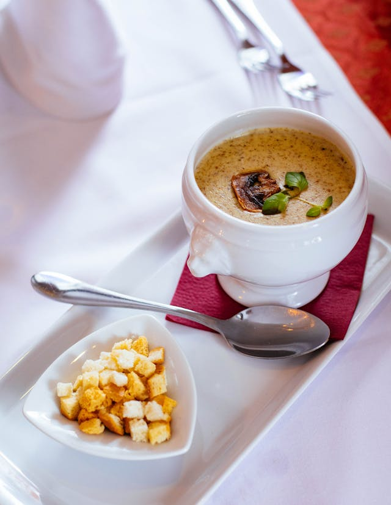

Mushroom Stew

Description
Just your ordinary mushroom stew inspired by Minecraft, a popular game.
Best served with croutons and dry moo-shroom. Vegan and cruelty-free.
Ingredients
- Ordinary mushroom
- Milk and moo-shroom from moo-shroom
- Croutons
- Black pepper (because why not? )
- Other vegetables you like
Steps
- Download Java and Minecraft. Create a new world.
- Find a moo-shroom, milk it, then butcher it to get moo-shroom.
- Teleport back from the virtual world to the real world. This is the key to keep this dish cruelty-free and vegan.
- Organize your gathered ingredients and cook them inside a pot.
- Blend the content into a soup, season and serve with croutons.
Home